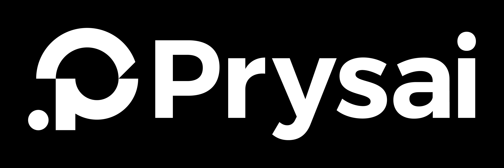

System-spatial
product, SaaS, dashboard, enterprise
INPUT / SAME SOURCE

identity locked
OUTPUT / SYSTEM-SPATIAL
representative landing frame
hierarchycontinuityclear state change
Make the mark feel native to a coherent product system: parts travel from semantic positions into one stable lockup.
ALGORITHM STACK
- scene-graph dependency ordering
- shared spatial anchors
- monotonic cubic interpolation
BEATS
mapalignresolve
QA FOCUSspatial continuity; no layout shift; focus order
GENERATED RESULTPanels align, then the mark resolves with no decorative noise.